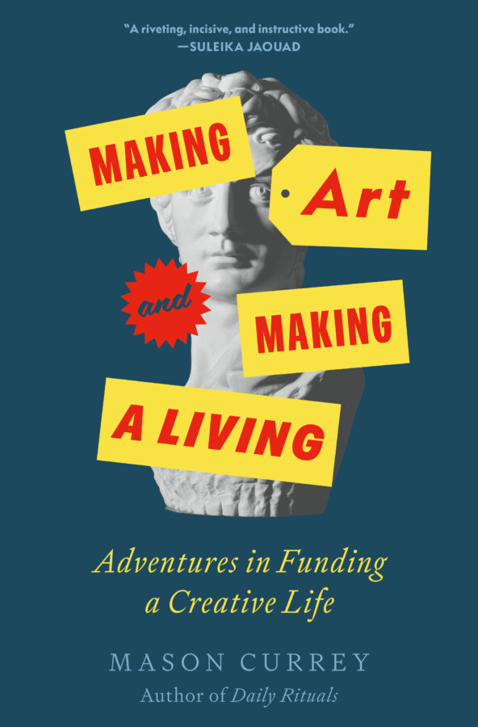

Book Signing & Talk: ‘Making Art and Making a Living’ with Mason Currey
In partnership with EXPO Chicago and the Chicago Athletic Association, we’re thrilled to celebrate the launch of Mason Currey’s new book, Making Art and Making a Living: Adventures in Funding a Creative Life.
Join us on April 8 for a book launch and discussion. The ticket price includes a hardcover copy of Making Art and Making a Living. Please note: Only books purchased on site will be available for signing. Colossal Members receive $10 off with the code in their account.
About Mason Currey
Mason Currey is the author of the Daily Rituals books, featuring brief profiles of the day-to-day working lives of more than 300 brilliant minds.